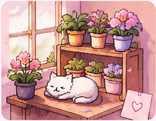
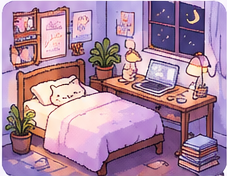
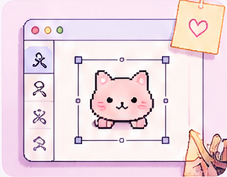
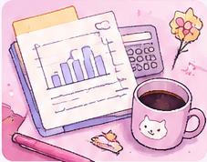
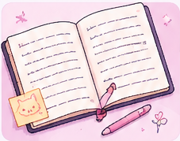

ALL NOTES
Field notes.
Thoughts, process, experiments, and everything in between.
A collection of notes from building small digital worlds.

Designing a cozy loop around care, not urgency.
Potted is a pixel-art nursery game built around growing flowers, collecting plants, adopting pets, and arranging a little shop. Its central promise is gentle progress: a seed becomes a flower because the player cared for it...
Read note →
Turning money decisions into a life simulation.
FinLit is a mobile financial-literacy RPG. Its described systems connect work and salary to everyday needs, health, housing, debt, investing, family events, and long-term retirement goals. That combination treats money as part of a life...
Read note →
Creative tools should make the next action feel possible.
Vera is an independent creative canvas for arranging and making designs. Scoreplay Studio explores a different creative act: following sheet music and hearing it played back. The projects explore how software helps someone move from idea to execution...
Read note →
When a score is not the same thing as confidence.
My research interests include evaluating risk in systems that deploy language models. One direction is an insurance-pricing framework for organizations using LLMs; another project involved an NLP pipeline across 800+ annual reports...
Read note →
Build logs that leave a trail someone else can follow.
I want future notes to become more specific as the projects develop: a before-and-after interaction, a bug that changed the model, a prototype that failed, or a measurement that changed what I thought I knew...
Read note →